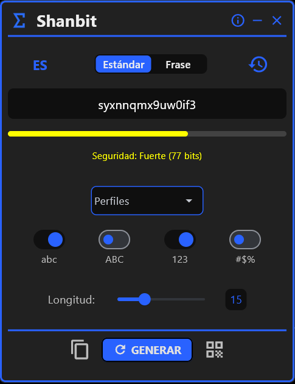
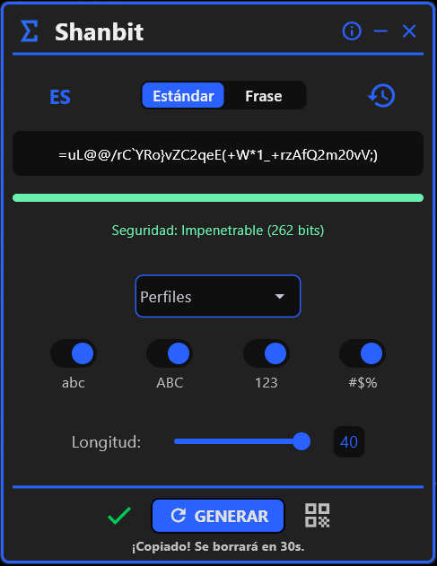
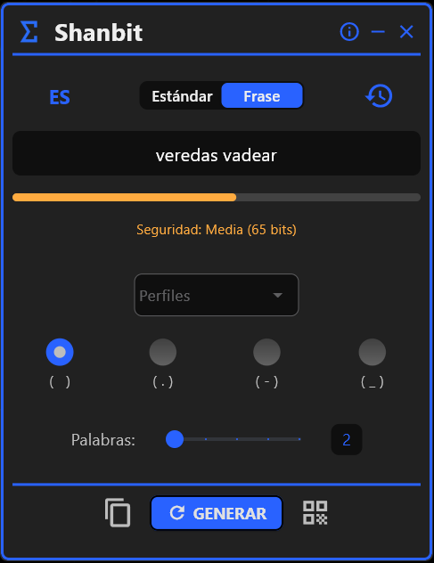
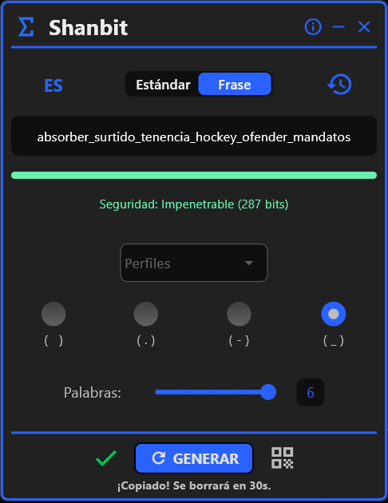
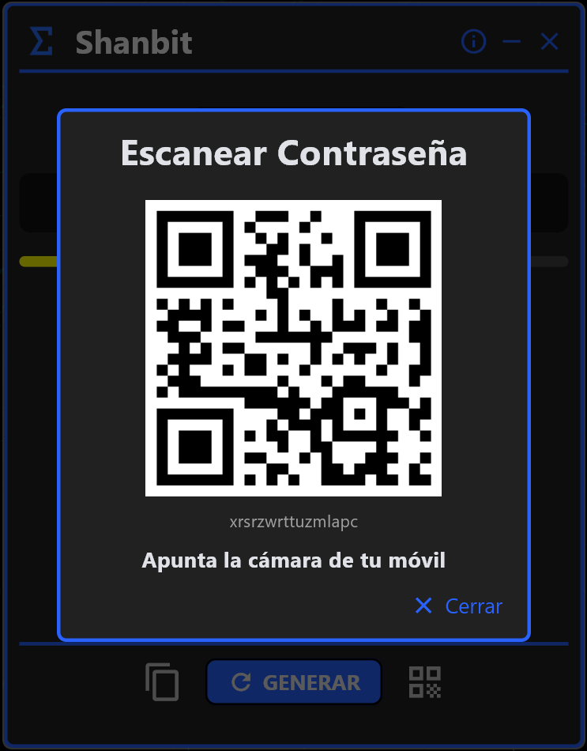
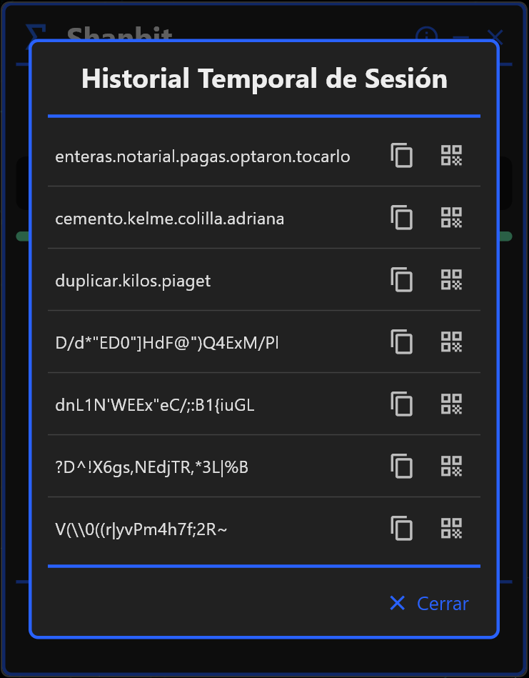

Por Qué Shanbit Es el Mejor Generador de Contraseñas Seguras
La mayoría de los generadores de contraseñas hacen afirmaciones de seguridad sin evidencia. Shanbit expone las matemáticas para que puedas verificar cada afirmación tú mismo.
¿Qué significa realmente "contraseña segura"?
Todo generador de contraseñas afirma producir una contraseña segura. Shanbit es la única herramienta offline que te permite verificar la fortaleza usando el estándar criptográfico: la Entropía de Shannon, medida en bits.
E = bits de entropía · L = longitud de la contraseña · R = tamaño del conjunto de caracteres
| Tipo de Contraseña | Longitud | Entropía (bits) | Nivel |
|---|---|---|---|
| Solo dígitos | 4 chars | 13 bits | Débil |
| Letras minúsculas | 10 chars | 47 bits | Moderada |
| Mayúsculas + minúsculas + números | 12 chars | 71 bits | Fuerte |
| Pool completo (May. + min. + núm. + símbolos) | 16 chars | 104 bits | Inquebrantable |
| Pool completo (May. + min. + núm. + símbolos) | 40 chars | 262 bits | Inquebrantable |
| Frase Diceware | 6 palabras | 287 bits | Inquebrantable |
La entropía por encima de 100 bits es computacionalmente inviable de descifrar con hardware actual o futuro, incluidos clústeres de GPU.
Por Qué los Generadores de Contraseñas Gratuitos Ponen Tus Datos en Riesgo
Cuando un generador de contraseñas web afirma usar "aleatoriedad criptográfica", no tienes forma de verificarlo. El JavaScript en tu navegador podría estar usando Math.random() — un PRNG no criptográfico — en lugar de crypto.getRandomValues(). No puedes inspeccionar la lógica del servidor. No puedes confirmar que tu contraseña segura no fue registrada.
El generador de contraseñas seguras de Shanbit usa el módulo secrets de Python, que envuelve CryptGenRandom en Windows — la misma fuente de entropía a nivel del sistema operativo usada para generar certificados TLS. La contraseña segura que produce Shanbit es verificablemente aleatoria.
Todo generador de contraseñas web también deja rastros forenses: caché del navegador, historial de navegación, registros de red del ISP y potencialmente registros de acceso del servidor. Shanbit no deja ninguno — porque no hay pila de red involucrada.
Generador de Contraseñas Seguras vs. Generador de Frases — ¿Cuál Usar?
Una contraseña segura (ej., kR#7mZ@qL2!x) empaqueta la máxima entropía en el mínimo de caracteres. Ideal para gestores de credenciales donde nunca escribes la clave manualmente.
Una frase generada con Diceware (ej., caballo-correcto-bateria-grapa-lampara) sacrifica la densidad de caracteres por la memorabilidad humana. Una frase de 6 palabras proporciona ~287 bits de entropía — equivalente a una contraseña segura de 50 caracteres completamente aleatoria — pero posible de recordar sin anotarla.
El generador de claves de Shanbit soporta listas de palabras en inglés y español. Cada palabra es seleccionada por secrets.choice — estadísticamente independiente de todas las selecciones anteriores. Esta es la diferencia técnica entre un generador de contraseñas seguras real y una herramienta que simplemente muestrea entradas adyacentes del diccionario.
Cómo Este Generador de Contraseñas Seguras Protege Tu Privacidad
Cada función de este generador de contraseñas seguras cierra un vector de ataque específico.
1. Generador de Contraseñas Seguras (CSPRNG + Entropía)
Cada contraseña segura es generada mediante el módulo secrets de Python (CSPRNG a nivel del SO). El medidor de entropía en tiempo real aplica E = L × log₂(R) para mostrar tu fortaleza exacta en bits antes de usar la contraseña.
- • Retroalimentación cromática: Débil / Moderada / Fuerte / Inquebrantable (>100 bits)
- • Control granular del conjunto de caracteres: símbolos, números, mayúsculas
- • Sin longitud mínima impuesta — el medidor de entropía te guía


2. Generador de Frases (Diceware)
El generador de claves incluido usa el estándar Diceware con listas de palabras en inglés y español. Cada palabra es seleccionada por secrets.choice — respaldado por CSPRNG, estadísticamente independiente.
- • Frase de 6 palabras ≈ 287 bits de entropía
- • Listas de palabras en inglés y español disponibles
- • Mismo núcleo CSPRNG que el generador de contraseñas seguras


3. Transferencia QR Offline
Transfiere tu contraseña segura o frase a un smartphone usando solo luz. Sin Wi-Fi, Bluetooth, USB ni NFC. El payload QR es una cadena Base64 volátil renderizada en RAM — nunca escrita en disco.
- • Escanea con cualquier app de cámara estándar — sin app complementaria
- • Payload destruido al cerrar la ventana del generador de contraseñas
- • Sin protocolo de red involucrado en ningún momento

4. Gestión de RAM a Nivel de Hilo
Shanbit gestiona la memoria volátil en cada operación. El historial de contraseñas permanece solo en RAM. Un hilo secundario borra el portapapeles. Al salir, todos los datos de sesión son eliminados — sin SQLite, sin entradas de registro, sin archivos temporales.
- • Sin huella forense en disco
- • Portapapeles borrado automáticamente (se borrará en 30s)
- • Aislamiento de proceso: sin registros persistentes a nivel del SO

Cómo Generar una Contraseña Segura con Shanbit
Cinco pasos. Menos de dos minutos. Sin internet en ningún momento.
Descarga desde la Microsoft Store
Se instala en Windows 10 y Windows 11. Binario autocontenido — sin internet tras la instalación.
Selecciona el Modo: Contraseña o Frase
Elige el generador de contraseñas seguras basado en CSPRNG o el generador de frases Diceware. Ambos usan el mismo núcleo criptográfico.
Configura la Complejidad y Verifica la Entropía
Activa mayúsculas, minúsculas, números y símbolos. El medidor de entropía muestra la fortaleza exacta en bits en tiempo real. Apunta a más de 100 bits para una contraseña segura Inquebrantable.
Copia o Transfiere por Código QR
El portapapeles se borra automáticamente tras el uso (se borrará en 30s). O escanea el QR en memoria para transferir la contraseña segura a tu móvil sin ninguna red.
Cierra la App — Todo Se Borra
Todos los datos de sesión en RAM volátil son destruidos permanentemente. Sin evidencia forense en tu dispositivo Windows.
Generador de Contraseñas Seguras — Preguntas Frecuentes
¿Por qué usar un generador de contraseñas seguras que funcione offline?
Las herramientas web enrutan tu contraseña generada a través de infraestructura remota, creando exposición a nivel de red, servidor y navegador. Un generador de contraseñas seguras 100% offline elimina los tres simultáneamente. Shanbit además evita la persistencia del portapapeles y el historial del navegador — superficies de ataque que ningún generador de contraseñas online puede abordar por diseño.
¿Cómo funciona Shanbit como generador de contraseñas seguras?
Shanbit usa el módulo secrets de Python (CSPRNG a nivel del SO) para generar cada carácter en tu contraseña segura. Luego aplica la Entropía de Shannon — E = L × log₂(R) — para calcular la fortaleza verificable en bits. Una contraseña segura por encima de 100 bits es computacionalmente inviable de descifrar con hardware moderno o futuro.
¿Shanbit incluye un generador de frases?
Sí. El generador de frases usa el método Diceware con listas de palabras en inglés y español. Cada palabra es seleccionada por secrets.choice (CSPRNG) — estadísticamente independiente de todas las selecciones anteriores. Una frase de 6 palabras proporciona ~287 bits de entropía.
¿Cuál es la diferencia entre una contraseña y una frase de contraseña?
Una contraseña segura maximiza la entropía por carácter usando el pool completo de símbolos. Una frase de contraseña sacrifica la densidad de caracteres por la memorabilidad humana — una frase Diceware de 6 palabras alcanza ~287 bits mientras sigue siendo posible de memorizar. Usa contraseñas para gestores de credenciales; usa frases para credenciales que debes escribir de memoria. El generador de claves de Shanbit soporta ambas.
¿Es esta la herramienta de privacidad más segura para Windows?
Shanbit es una herramienta de seguridad y privacidad dedicada con una política estricta de solo RAM. Ningún otro generador de contraseñas para Windows combina entropía CSPRNG, fortaleza de Shannon verificable, generador de frases Diceware, transferencia QR en memoria y borrado de portapapeles a nivel de hilo — con cero dependencias de red.
¿Cómo funciona la transferencia QR offline?
Shanbit renderiza tu contraseña segura o frase como un código QR a partir de una cadena Base64 volátil construida completamente en RAM. Escanea con la cámara de tu móvil — sin app complementaria necesaria. El payload nunca se escribe en disco y se destruye al cerrar la ventana.
Desarrollado por PyBloSoft
PyBloSoft es una empresa de software independiente que construye herramientas de software para Windows. Cada decisión de diseño en Shanbit — CSPRNG sobre PRNG estándar, borrado de portapapeles a nivel de hilo, Diceware para el generador de claves, historial solo en RAM — refleja experiencia en programación de sistemas para Windows. Publicamos herramientas que nosotros mismos usamos.
Sin telemetría. Sin analítica. Sin nube. Nuestra filosofía de generador de contraseñas seguras: si tus datos pueden salir del dispositivo, la herramienta ya ha fallado en su propósito principal.
La diferencia fundamental
"Los generadores de contraseñas gratuitos online optimizan para el tráfico.
Shanbit optimiza para la privacidad."
Todo generador de contraseñas gratuito online necesita que visites su página. Esa visita es el producto. Tu tráfico, tu patrón de comportamiento — todo monetizable. Shanbit no tiene modelo de tráfico. Sin anuncios. Sin analítica. Lo único que hace es generar una contraseña segura criptográficamente en tu máquina local, y luego olvidar que ocurrió.
Si eso suena como la herramienta de privacidad que has estado buscando, está disponible ahora en la Microsoft Store para Windows 10 y Windows 11.

Nota: La interfaz de la app está disponible en inglés y español.